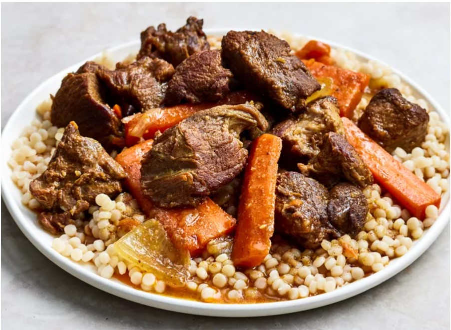

Lamb Tagine

Lamb slow-cooked with apricots and olives in a conical clay pot, scented with ras el hanout and preserved lemon.
Ingredients
- 1 kg lamb shoulder, cubed
- 2 onions, sliced
- 4 garlic cloves
- 2 tbsp ras el hanout
- 1 tsp ground ginger
- 1 preserved lemon
- 0.5 cup dried apricots
- 0.5 cup green olives
- 2 cups stock
Instructions
Step 1
Toss lamb with spices, garlic and a little oil. Rest 30 minutes.
Step 2
Layer onions in the tagine, then add the lamb and stock.
Step 3
Cook covered on low heat for 2 hours, until the lamb is tender.
Step 4
Add apricots, olives and preserved lemon. Simmer 20 minutes uncovered.
Step 5
Serve with couscous or crusty bread.
Video tutorial
Nutrition per serving
| Calories | 510 kcal |
|---|---|
| Carbohydrates | 24 g |
| Protein | 38 g |
| Fat | 29 g |